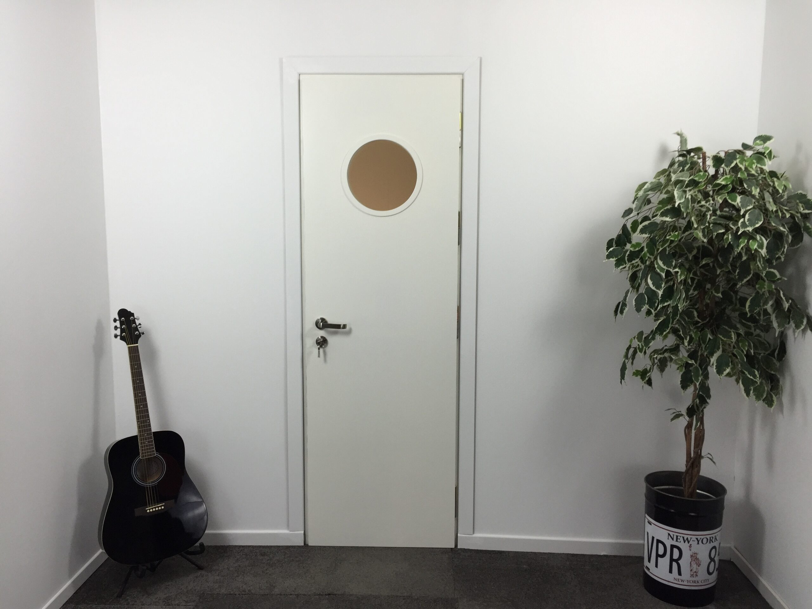

Porte acoustique simple vantail avec hublot rond — 40 dB Rw — Fabrication française

Porte acoustique avec hublot rond en verre acoustique feuilleté. Idéale pour les espaces nécessitant visibilité et confidentialité sonore. Le hublot circulaire intégré permet la surveillance visuelle tout en conservant l’intégrité acoustique de la porte.
| Composition | |
| Référence | ISO-PO-40 |
| Âme | Bois massif multicouche haute densité |
| Hublot | Verre acoustique feuilleté rond encadré |
| Huisserie | Acier ou bois massif au choix |
| Seuil | Automatique escamotable inclus |
| Joints | Périmétriques compressibles 3 voies |
| Dimensions standards | |
| Hauteur (H) | 2 040 mm |
| Largeurs disponibles | 630 / 730 / 830 / 930 mm |
| Épaisseur vantail | 68 mm |
| Sur mesure | Disponible sur devis |
| Performance acoustique | |
| Rw (isolation) | 40 dB |
| Spectre C | −1 dB |
| Spectre Ctr | −3 dB |
| Manutention | |
| Poids | 75 à 110 kg selon largeur |
| Sens d’ouverture | Droite ou gauche au choix |
| Dimension | Tarif HT |
|---|---|
| 630 × 2 040 mm | 1 579 € |
| 730 × 2 040 mm | 1 718 € |
| 830 × 2 040 mm | 1 853 € |
| 930 × 2 040 mm | 1 911 € |
| Options tarifaires | |
|---|---|
| Serrure 3 points | 389 € |
| Finition cuir 1 côté | 398 € |
| Finition tissu 1 côté | 312 € |
| Peinture époxy 2 côtés (RAL) | 425 € |
| Porte blindée | 421 € |
| Tige carré | 13 € |
| Clé cylindre 30x40 | 32 € |
Vérification des cotes brutes : hauteur +10 mm, largeur +10 mm minimum. L’ouverture doit être d’aplomb et de niveau avant la pose de l’huisserie.
Calage, vérification de l’équerrage et scellement selon le support. Bourrage complet des jours avec mousse acoustique haute densité.
Mise en place du vantail sur les paumelles pré-réglées. Réglage tridimensionnel pour alignement parfait avec les joints périmétriques.
Réglage du seuil escamotable et vérification de la bonne compression des joints sur tout le périmètre.